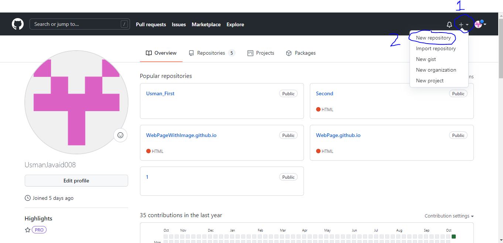

Version Control System using GitHub
A version control system is a kind of software that helps the developer team to efficiently communicate and manage(track) all the changes that have been made to the source code along with the information like who made and what change has been made.
GitHub is a web-based version-control and collaboration platform for software developers.
Git is used to store the source code for a project and track the complete history of all changes
to that code. It allows developers to collaborate on a project more effectively by providing tools
for managing possibly conflicting changes from multiple developers. GitHub allows developers to change,
adapt and improve software from its public repositories for free, but it charges for private repositories,
offering various paid plans. Each public or private repository contains all of a project's files,
as well as each file's revision history. Repositories can have multiple collaborators and can be either
public or private.
GitHub facilitates social coding by providing a web interface to the Git code repository and
management tools for collaboration. GitHub can be thought of as a serious social networking site
for software developers. Members can follow each other, rate each other's work, receive updates
for specific projects and communicate publicly or privately.
Complete Guide to use GitHub for Beginners
To create an account on GitHub, Click here
If you already have an account, Sign In
After signing in to your account
You can own repositories individually, or you can share ownership of repositories with other people in an organization. You can restrict who has access to a repository by choosing the repository's visibility. For more information, see "About repository visibility." For user-owned repositories, you can give other people collaborator access so that they can collaborate on your project. If a repository is owned by an organization, you can give organization members access permissions to collaborate on your repository. For more information, see "Permission levels for a user account repository" and "Repository permission levels for an organization." With GitHub Free for user accounts and organizations, you can work with unlimited collaborators on unlimited public repositories with a full feature set, or unlimited private repositories with a limited feature set. To get advanced tooling for private repositories, you can upgrade to GitHub Pro, GitHub Team, or GitHub Enterprise Cloud. For more information, see "GitHub's products." You can use repositories to manage your work and collaborate with others. You can use issues to collect user feedback, report software bugs, and organize tasks you'd like to accomplish. For more information, see "About issues." You can use GitHub Discussions to ask and answer questions, share information, make announcements, and conduct or participate in conversations about a project. For more information, see "About discussions." You can use pull requests to propose changes to a repository. For more information, see "About pull requests." You can use project boards to organize and prioritize your issues and pull requests. For more information, see "About project boards." For more, visit GitHub official documentation.
On the upper right corner of your login page, there is a '+' sign.
Press it, and then press New Repository as shown;

Creating Repository
Just name the repository and proceed to create repository button below;
Naming Repository
Complete the setup by running the commands showing on next screen, first bash your folder by right click the folder and pressing Bash Here option.
Commands to setup the data
A cmd appers, and in it, you have to write the quick setup instructions one by one. first create a file
Write some html code here (just an example, you can add images here as well)